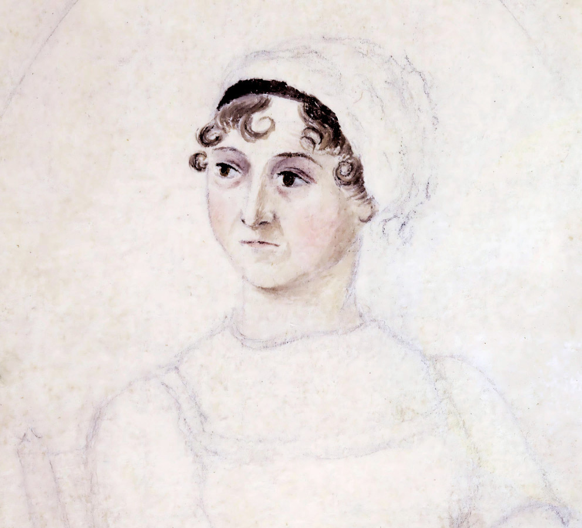
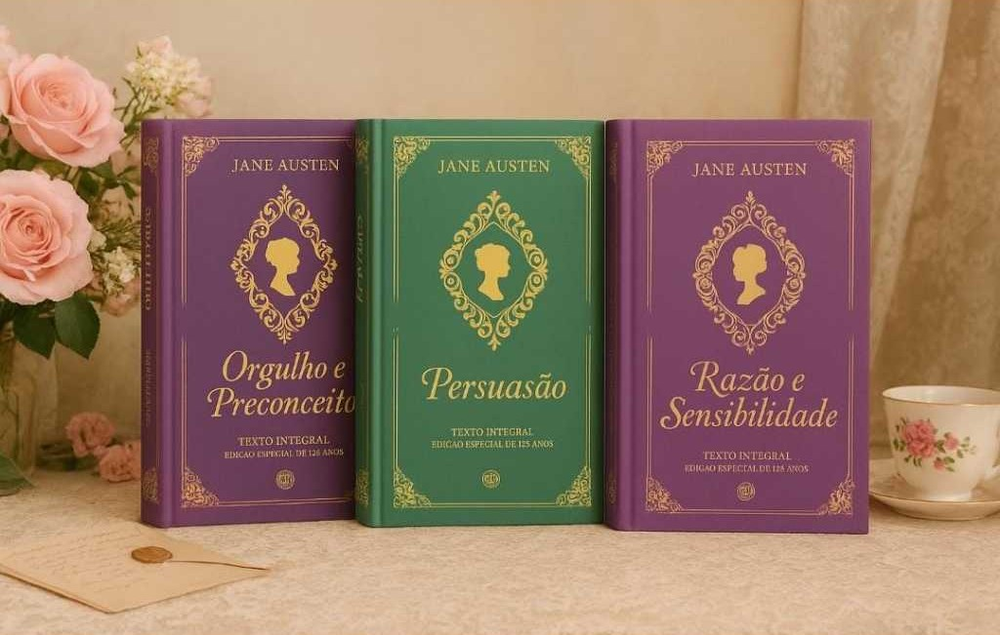

"There is no charm equal to tenderness of heart."

Orgulho e Preconceito — Meu favorito pela evolução de Elizabeth Bennet e Mr. Darcy.
Persuasão — Uma emocionante história sobre reencontros e segundas chances.
Razão e Sensibilidade — Uma reflexão sobre razão, emoção e amadurecimento.